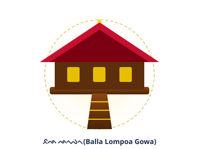
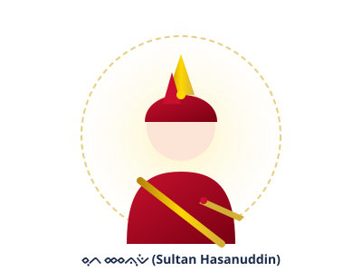

Balla Lompoa
& Perahu Layar Phinisi
AKSARA LONTARA
"Mari Belajar Bahasa Makassar!"
Pelajari aksara tradisional melalui metode fonetik interaktif, kosa kata kartu kembar 3D, dan perpustakaan sastra berjenjang yang nyaman di mata.

Sultan Hasanuddin
& Tari Pakarena Makassar
Pilih Modul Pembelajaran
Dirancang sistematis untuk pemula hingga pembelajar mahir sastra klasik Makassar
19 Aksara & Suara
Pelajari 19 huruf dasar Lontara (Ina' Surat) lengkap dengan audio asli dan simulasi tanda baca vokal.
Kosa Kata Dual-Card
Sistem kartu kembar berpasangan menghubungkan aksara Lontara, kata Makassar, dan ilustrasi 3D kehidupan sehari-hari.
Bacaan Berjenjang
Perpustakaan bertingkat dari sapaan pemula, cerita harian, 7 puisi, hingga naskah sakral Sumpah Angngaru & lagu daerah.